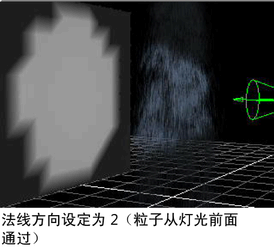

照明效果是动画的一个基本元素。可以使用几种常用于常规曲面的照明技术渲染粒子。
添加反射、折射和阴影
对“云”、“管状体”和“滴状曲面”进行软件渲染时，可以启用反射、折射和阴影。
启用反射、折射和阴影
- 选择粒子对象。
- 在“属性编辑器”(Attribute Editor)的“渲染统计信息”(Render Stats)区域中，启用：
-
在反射中可见(Visible In Reflections)
-
在折射中可见(Visible In Refractions)
-
投射阴影(Casts Shadows)
必须使用光线跟踪来创建反射和折射。可以使用光线跟踪或深度贴图阴影来创建阴影。有关详细信息，请参见“渲染”。
提示： 如果已在场景中创建了云、管状体或滴状曲面，并且当前未使用它们，则可通过选择粒子对象并禁用“主可见性”(Primary Visibility)来加快软件测试渲染的速度。
将灯光与移动的粒子一起使用
默认情况下，所有粒子将均匀地照亮，而与场景中放置灯光的位置无关。为了某些效果，可能需要将移动的粒子漂移到照明中或从照明中漂移出去，在没有照明时消失。
例如，可能希望雪茄烟雾在灯下升起的景象仅当它穿过照明时才显示。或者，可能希望雨仅在从路灯下经过或在车前灯前面时才显示。
如果使用“条纹”(Streak)、“点”(Point)、“多条纹”(MultiStreak)和“多点”(Multipoint)渲染类型，可以使用灯光来创建这些效果。
将场景照明与粒子一起使用
- 将聚光灯、点光源或平行光添加到场景中。聚光灯会产生最明显的效果。有关添加灯光的详细信息，请参见创建 Maya 光源。
- 将灯光对准粒子。
- 选择“照明 > 使用所有灯光”(Lighting > Use All Lights)。
- 选择“着色 > 对所有项目进行平滑着色处理”(Shading > Smooth Shade All)。
- 选择要照亮的粒子对象。
- 在“属性编辑器”(Attribute Editor)中，将“粒子渲染类型”(Particle Render Type)设定为“条纹”(Streak)、“点”(Point)、“多条纹”(MultiStreak)或“多点”(Multipoint)。
- 单击“为当前渲染类型添加属性”(Add Attributes For Current Render Type)按钮。
在“属性编辑器”(Attribute Editor)中会显示默认渲染属性。
- 在“渲染属性”(Render Attributes)区域中，启用“使用照明”(Use Lighting)。
- 若要最大化粒子照明，请按如下方式设定“法线方向”(Normal Dir)：
- 如果大多数或所有粒子朝向灯光移动，请设定为 1。示例：朝向灯光上升的烟雾。
- 如果大多数或所有粒子是静止的，或从灯光前面经过，请设定为 2。示例：从前灯前面经过的雨，或围绕点光源创建辉光的静止粒子。
- 如果大多数或所有粒子正在远离灯光，请设定为 3。示例：向下掉落经过路灯的雨。
- 在“硬件渲染缓冲区”(Hardware Render Buffer)窗口中，选择“渲染 > 属性”(Render > Attributes)。
- 在“属性编辑器”(Attribute Editor)的“渲染模式”(Render Modes)区域中，从“照明模式”(Lighting Mode)下拉菜单中选择“所有灯光”(All Lights)。
- 对场景进行硬件渲染以查看效果。
注： 有时，在硬件渲染器中查看时，未照亮的粒子可能比照亮的粒子显得更亮。若要解决该问题，请用小半径球体替换粒子类型。

提示： 如果未按预期照亮粒子，请确保灯光指向粒子。另外，请定位并旋转摄影机，以便从灯光背后查看粒子。由于更改“法线方向”(Normal Dir)设置很方便，所以简单地尝试每个设置并查看哪个效果最好通常是最快的。如果“法线方向”(Normal Dir)设定为 1 或 3 时使用静止粒子，则不会显示这些粒子。
将阴影投射应用到粒子
Maya 支持硬件渲染的粒子类型（如“点”(Point)、“多点”(MultiPoint)和“球体”(Sphere)）的阴影投射。这些粒子也会将阴影投射到自身上（自身阴影）。由于深度贴图的分辨率有限，粒子可能会投射粗糙或像素化的阴影。